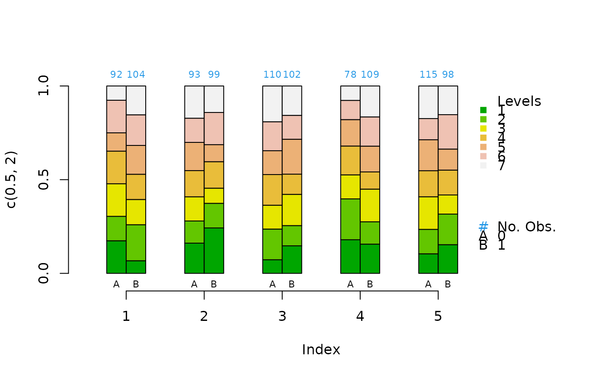
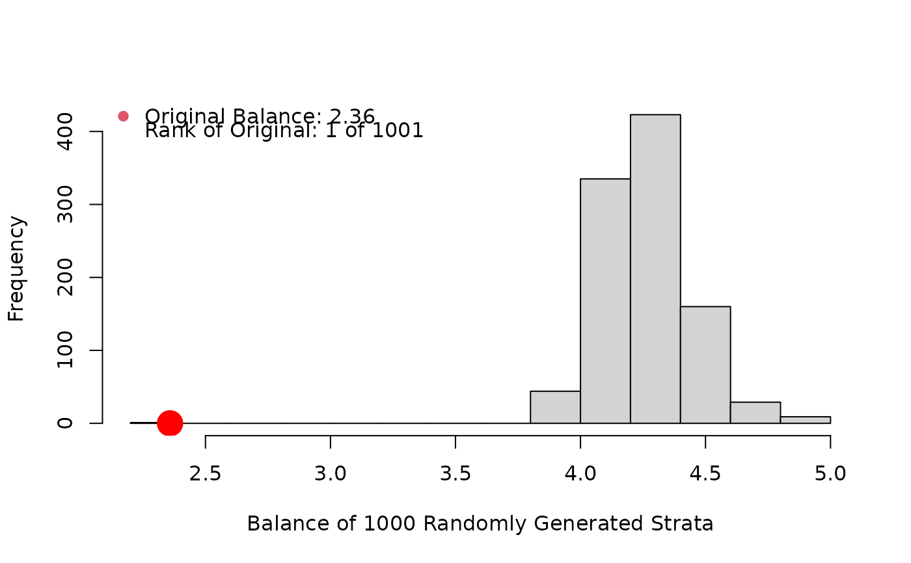

R/cat.psa.R
cat.psa.RdGiven predefined strata and two level treatment for a categorical covariate
from a propensity score analysis, cat.psa draws pairs of side by side
barplots corresponding to control and treatment for each stratum.
cat.psa(
categorical,
treatment = NULL,
strata = NULL,
catnames = NULL,
catcol = "terrain.colors",
width = 0.25,
barlab = c("A", "B"),
barnames = NULL,
rtmar = 1.5,
balance = FALSE,
B = 1000,
tbl = TRUE,
cex.leg = 1,
...
)Vector or N X 3 dataframe or matrix. If a vector, then
represents a categorical covariate that is being balanced within strata in a
PSA. If categorical has three columns, then the second and third are
assumed to be the treatment and strata respectively. Missing
values are not allowed. May be factor or numeric.
Binary vector or factor of same length as continuous
representing the two treatments.
A vector or factor of same length as continuous
indicating the derived strata from estimated propensity scores. Strata are
ordered lexicographically in plot.
List of names in order of the categories; used in the plot
legend. Default is 1:n.
List of colors used for the categories, default is
terrain.colors.
Controls width of bars, default = 0.25.
Binary list of single treatment character labels for
the bars, default is c("A", "B"). These are defined in a legend by
barnames.
Binary list of treatment names used in the legend; by
default names are taken from treatment.
Numeric. Governs size of right margin allocated for legend. Default = 1.5
Logical. If TRUE a call is made to functions
bal.cs.psa and bal.cws.psa. The former provides a reference
histogram and ad hoc balance statistic, the second provides bootstrapped
p-values for the two-way table formed in each statum. Default is
FALSE.
Numeric; passed to bal.cs.psa governing size of reference
histogram generated. Default is 100.
Logical; if TRUE, then a matrix of the proportions used in
the creation of the bargraph is returned.
Numeric; value of cex (governing font size) passed to
legend. Default = 1.
Other graphical parameters passed to plot.
If tbl is TRUE, then a matrix is returned containing
the proportions of each category, and in each treatment level and stratum
that were used to draw the bargraph.
Pairs of bars are graphed side by side so that comparisons may be made
within each stratum and across strata. If balance is TRUE,
then the histogram represents an ad hoc balance measure of the given strata
as compared to randomly generated strata. The p-values provided on the
bargraph are bootstrapped in a standard fashion via randomly generated
treatment divisions within given strata. For continuous covariates use
box.psa.
bal.cs.psa, bal.cws.psa, box.psa
categorical<-sample(1:7,1000,replace=TRUE)
treatment<-sample(c(0,1),1000,replace=TRUE)
strata<-sample(5,1000,replace=TRUE)
cat.psa(categorical,treatment,strata)

#> $`treatment:stratum.proportions`
#> 0:1 1:1 0:2 1:2 0:3 1:3 0:4 1:4 0:5 1:5
#> 1 0.174 0.067 0.161 0.242 0.073 0.147 0.179 0.156 0.104 0.153
#> 2 0.130 0.192 0.118 0.131 0.164 0.108 0.218 0.119 0.130 0.163
#> 3 0.174 0.135 0.129 0.081 0.127 0.167 0.128 0.174 0.174 0.102
#> 4 0.174 0.135 0.140 0.141 0.164 0.108 0.154 0.092 0.139 0.133
#> 5 0.098 0.154 0.151 0.091 0.127 0.186 0.141 0.138 0.165 0.112
#> 6 0.174 0.163 0.129 0.172 0.155 0.127 0.103 0.156 0.113 0.184
#> 7 0.076 0.154 0.172 0.141 0.191 0.157 0.077 0.165 0.174 0.153
#>
data(lindner)
attach(lindner)
#> The following objects are masked from lindner (pos = 3):
#>
#> abcix, acutemi, cardbill, diabetic, ejecfrac, female, height,
#> lifepres, stent, ves1proc
lindner.ps <- glm(abcix ~ stent + height + female +
diabetic + acutemi + ejecfrac + ves1proc,
data = lindner, family = binomial)
ps<-lindner.ps$fitted
lindner.s5 <- as.numeric(cut(ps, quantile(ps, seq(0, 1, 1/5)),
include.lowest = TRUE, labels = FALSE))
cat.psa(stent, abcix, lindner.s5, xlab = "stent")
#> $`treatment:stratum.proportions`
#> 0:1 1:1 0:2 1:2 0:3 1:3 0:4 1:4 0:5 1:5
#> 0 0.853 0.771 0.253 0.226 0.138 0.163 0.233 0.269 0.25 0.185
#> 1 0.147 0.229 0.747 0.774 0.862 0.837 0.767 0.731 0.75 0.815
#>
lindner.s10 <- as.numeric(cut(ps, quantile(ps, seq(0, 1, 1/10)),
include.lowest = TRUE, labels = FALSE))
cat.psa(ves1proc,abcix, lindner.s10, balance = TRUE, xlab = "ves1proc")

#> Histogram of Random Strata Balance. Press <enter> for next chart...
#> $`treatment:stratum.proportions`
#> 0:1 1:1 0:2 1:2 0:3 1:3 0:4 1:4 0:5 1:5 0:6 1:6 0:7
#> 0 0.017 0.071 0.000 0 0.000 0.000 0 0.000 0.000 0.000 0.000 0.000 0.000
#> 1 0.983 0.929 0.946 1 0.857 0.969 1 0.917 0.897 0.814 0.889 0.815 0.583
#> 2 0.000 0.000 0.054 0 0.143 0.031 0 0.083 0.103 0.186 0.111 0.185 0.375
#> 3 0.000 0.000 0.000 0 0.000 0.000 0 0.000 0.000 0.000 0.000 0.000 0.042
#> 4 0.000 0.000 0.000 0 0.000 0.000 0 0.000 0.000 0.000 0.000 0.000 0.000
#> 5 0.000 0.000 0.000 0 0.000 0.000 0 0.000 0.000 0.000 0.000 0.000 0.000
#> 1:7 0:8 1:8 0:9 1:9 0:10 1:10
#> 0 0.000 0.000 0.000 0.000 0.000 0.000 0.000
#> 1 0.486 0.263 0.195 0.364 0.379 0.000 0.253
#> 2 0.500 0.737 0.732 0.545 0.460 0.444 0.396
#> 3 0.014 0.000 0.073 0.091 0.161 0.444 0.198
#> 4 0.000 0.000 0.000 0.000 0.000 0.111 0.143
#> 5 0.000 0.000 0.000 0.000 0.000 0.000 0.011
#>
#Using a rpart tree for strata
library(rpart)
lindner.rpart<-rpart(abcix ~ stent + height + female + diabetic +
acutemi + ejecfrac + ves1proc, data=lindner, method="class")
lindner.tree<-factor(lindner.rpart$where, labels = 1:6)
cat.psa(stent, abcix, lindner.tree, xlab = "stent")
#> $`treatment:stratum.proportions`
#> 0:1 1:1 0:2 1:2 0:3 1:3 0:4 1:4 0:5 1:5 0:6 1:6
#> 0 0.429 0 1 1 1 1 0 0 0.667 0.316 0.426 0.302
#> 1 0.571 1 0 0 0 0 1 1 0.333 0.684 0.574 0.698
#>
cat.psa(ves1proc, abcix, lindner.tree, xlab = "ves1proc")
#> $`treatment:stratum.proportions`
#> 0:1 1:1 0:2 1:2 0:3 1:3 0:4 1:4 0:5 1:5 0:6 1:6
#> 0 0 0 0.034 0.062 0 0.023 0 0 0 0 0.000 0.000
#> 1 1 1 0.966 0.938 1 0.977 1 1 1 1 0.000 0.000
#> 2 0 0 0.000 0.000 0 0.000 0 0 0 0 0.870 0.795
#> 3 0 0 0.000 0.000 0 0.000 0 0 0 0 0.111 0.151
#> 4 0 0 0.000 0.000 0 0.000 0 0 0 0 0.019 0.050
#> 5 0 0 0.000 0.000 0 0.000 0 0 0 0 0.000 0.004
#>